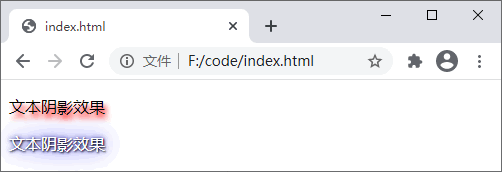
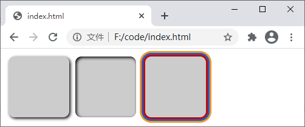

CSS阴影效果（2种方法）
在网页设计中常常要使用到阴影效果，通过阴影效果可以很好的突出一个元素，在 CSS3 出现之前，我们想要为文本或者元素添加阴影效果需要借助图像才能实现，很不方便。而 CSS3 出现之后，我们通过 text-shadow 和 box-shadow 两个属性就可以为文本或元素添加阴影效果，不需要借助任何图像。
1. text-shadow
使用 CSS 的 text-shadow 属性我们可以为文本设置阴影效果，属性的语法格式如下：text-shadow: offset-x offset-y blur color;
语法说明如下：- offset-x：必填参数，设置阴影的水平偏移量，可以为负值；
- offset-y：必填参数，设置阴影的垂直偏移量，可以为负值；
- blur：可选参数，设置模糊的半径，值越大，模糊越大，阴影的边缘越模糊，不允许使用负值；
- color：可选参数，设置阴影的颜色，如果省略或未指定该值，则采用 color 属性的值。
提示：使用 text-shadow 属性可以同时设定多组阴影效果，每组之间使用逗号分隔，定义的多组阴影效果会按照定义顺序依次罗列，第一个阴影在最上面，以此类推。另外，若要取消文本的阴影效果则可以将 text-shadow 属性的值设置为 none。
【示例】使用 text-shadow 属性为文本添加阴影效果：
<!DOCTYPE html>
<html>
<head>
<style>
p.one {
text-shadow: 3px 5px 5px #FF0000;
}
p.two {
color: white;
text-shadow: 1px 1px 2px black,
0 0 25px blue,
0 0 5px darkblue;
}
</style>
</head>
<body>
<p class="one">文本阴影效果</p>
<p class="two">文本阴影效果</p>
</body>
</html>
运行效果如下图所示：

图：text-shadow 属性演示
图：text-shadow 属性演示
2. box-shadow
使用 CSS 的 box-shadow 属性我们可以为 HTML 元素设置阴影效果，属性的语法格式如下：box-shadow: h-shadow v-shadow blur spread color inset;
语法说明如下：- h-shadow：必填参数，设置阴影水平方向的偏移量，可以为负值；
- v-shadow：必填参数，设置阴影垂直方向的偏移量，可以为负值；
- blur：可选参数，设置模糊的半径，值越大，模糊越大，阴影的边缘越模糊，不允许使用负值；
- spread：可选参数，设置阴影的尺寸；
- color：可选参数，设置阴影的颜色；
- inset：可选参数，将默认的外部阴影 (outset) 改为内部阴影。
提示：与 text-shadow 属性相似，box-shadow 属性也可以同时设定多组阴影效果，每组之间使用逗号分隔，定义的多组阴影效果会按照定义顺序依次罗列，第一个阴影在最上面，以此类推。
【示例】使用 box-shadow 属性为文本添加阴影效果：
<!DOCTYPE html>
<html>
<head>
<style>
div {
width: 100px;
height: 100px;
border-radius: 10px;
background-color: #CCC;
float: left;
margin: 5px;
}
div.one {
box-shadow: 2px 2px 5px #000;
}
div.two {
box-shadow: 2px 2px 5px #000 inset;
}
div.three {
margin-left: 10px;
box-shadow: 0px 0px 0px 3px #bb0a0a,
0px 0px 0px 6px #2e56bf,
0px 0px 0px 9px #ea982e;
}
</style>
</head>
<body>
<div class="one"></div>
<div class="two"></div>
<div class="three"></div>
</body>
</html>
运行效果如下图所示：

图：box-shadow 属性演示
图：box-shadow 属性演示
关注公众号「站长严长生」，在手机上阅读所有教程，随时随地都能学习。内含一款搜索神器，免费下载全网书籍和视频。

微信扫码关注公众号